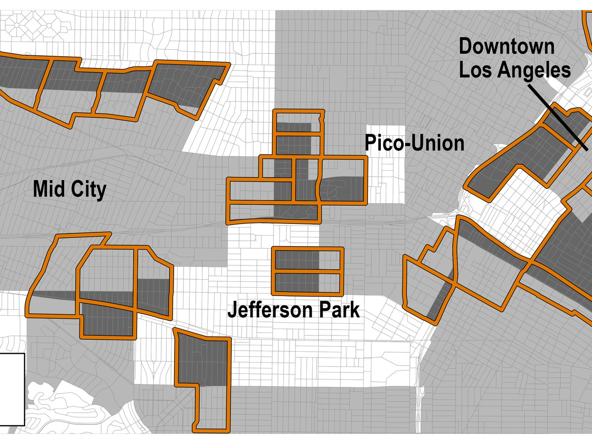

Abstract
Aggressive police tactics have expanded definitions of criminal behavior, empowered officers to stop and detain people on thin pretexts, and led to the pervasive surveillance of entire neighborhoods. But the political effects of these forms of criminalization remain poorly understood. I leverage within-neighborhood variation in exposure to a series of anti-gang crackdowns in Los Angeles that expanded the criminal code and lowered the standard of suspicion for police stops within court-ordered safety zones. Using administrative data on voting, a geocoded panel survey, and a difference-in-difference design, I find that these crackdowns generated large, durable increases in voter registration, turnout, and civic engagement. Mobilization was concentrated among Black, Latino, and young people and accompanied by significant increases in support for criminal justice reform, consistent with backlash to policing seen as racially targeted. The results highlight how visible, traceable forms of punitive policing can push highly policed communities toward political engagement.